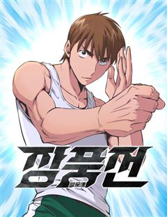

킬러 배드로 같은 웹툰 추천

킬러 배드로 · 김정현 / 임리나
킬러 배드로 재밌게 봤다면 이 웹툰들도 좋아할 거예요. 같은 장르이면서 격투기, 느와르, 고인물 같은 요소가 겹치는 작품을, 겹치는 요소가 많은 순서로 20개 골랐어요.
2026-10-10 기준 · 네이버웹툰·카카오웹툰·레진코믹스 · 성인 작품 제외
내 취향으로 직접 골라 추천받기 →-
1
 네이버웹툰
네이버웹툰김부장
“제발 안경 쓴 아저씨는 건들지 말자…” 오직 자신의 딸 '민지'를 위해 특수요원직을 관두고 평범함을 선택한 가장 김부장. 그러던 어느 날 민지가 소리소문 없이 사라지고, 김부장은 자신을 감시하는 국가를 적으로 돌리면서까지 딸을 찾아나서기 시작하는데…
격투기느와르범죄시리어스액션네이버웹툰에서 보기 → · 김부장 같은 웹툰 → -
2
 네이버웹툰
네이버웹툰백XX
정보사(HID) 요원 '백이수'와 범죄 조직의 보스인 쌍둥이 형 '백도경'. 같은 얼굴 다른 삶을 살아온 쌍둥이 형제. 조직에 배신당한 동생은 자신의 신분을 버리고 형이 되기로 한다. 정보사요원, 범죄 조직의 보스가 되다...!
느와르범죄시리어스먼치킨액션네이버웹툰에서 보기 → · 백XX 같은 웹툰 → -
3
 네이버웹툰
네이버웹툰오브차카
러시아 마피아 빅 보스의 피습. 권력을 노린 배신이 조직을 무너뜨린다. 오브차카 보리스는 친우의 피 앞에서 복수를 선택한다. [백XX]의 첫 공식 스핀오프.
느와르범죄시리어스복수극액션네이버웹툰에서 보기 → -
4
 네이버웹툰
네이버웹툰레드셔츠
킬러 회사의 전설, 차시혁. 사랑하는 여자를 만나 은퇴를 결심하지만, 회사는 그를 쉽게 놔줄 생각이 없었다. 결국, 그의 모든 것을 앗아가기 시작하고, 차시혁은 다시 칼을 든다. 복수가 시작되고, 거대한 조직 ‘네빌가’와의 전쟁도 피할 수 없게 되는…
느와르미친작화먼치킨복수극액션네이버웹툰에서 보기 → -
5
 네이버웹툰
네이버웹툰최강전설 강해효
맹수같이 거친 문제아 학생들만 모여있는 최강고등학교!! 그곳에서 변화가 시작되었다.
격투기먼치킨복수극학원물액션네이버웹툰에서 보기 → · 최강전설 강해효 같은 웹툰 → -
6
 네이버웹툰
네이버웹툰인그레이브
갱단과의 전쟁이 끊이질 않던 국가 “산 로메리아”에서 누명을 쓰고 억울하게 옥살이를 하게 된 주인공 “니콜”. 그는 악명 높은 갱단을 수용하기 위해 신설된 범죄자 도축장, “크라네오 교도소”에 투옥된다. 지옥같은 교도소 생활에서 니콜은 점점 죄의식에…
느와르범죄시리어스액션네이버웹툰에서 보기 → -
7
 네이버웹툰
네이버웹툰나쁜사람
착한 남자가 좋다는 그녀의 이상형이 되기 위해 10년 동안 노력했다. 그런데! 갑자기 나쁜 남자가 좋다는 그녀... 오늘부터 난... 나쁜 남자로 다시 태어난다.
격투기느와르학원물액션네이버웹툰에서 보기 → · 나쁜사람 같은 웹툰 → -
8
 네이버웹툰
네이버웹툰불꽃
카지노, 주류, 건설, 대부업까지 하나로 묶어놓은 (주)운중의 초대회장 이운일, 그리고 그의 후계자 이주화 회장. 한 날 한 시에 떠나버린 두 부자의 갑작스러운 죽음으로 운중의 이권다툼이 시작된다. 회사의 이권다툼에 정면으로 나선 운중의 실장 남대균…
느와르시리어스먼치킨액션네이버웹툰에서 보기 → -
9
 네이버웹툰
네이버웹툰소년교도소
조폭인 아버지를 식물인간으로 만들어 소년교도소에 수감된 ‘차주영’. 얼마 뒤, 깨어나지 못할 거라 여겼던 아버지가 찾아와 말한다. “아들아, 내가 너의 소꿉친구를 죽였다” 그런 아버지에게 복수할 방법은 단 하나 ‘이 교도소를 장악하는 것’
느와르범죄복수극액션네이버웹툰에서 보기 → -
10
 네이버웹툰
네이버웹툰카르텔
가장 낙후된 동네에 혼자 남게 된 소년, 원도윤. 재능은 있었지만 세상은 그를 끌어내렸다. 거대 조직이 쥐고 흔드는 세상에서는 위로 오를수록 더 깊이 빠진다는 것을 깨닫는다. 원도윤은 끝내 선택한다. 정상 대신 나락을. 그리고 스스로 카르텔의 중심에…
느와르범죄복수극액션네이버웹툰에서 보기 → -
11
 네이버웹툰
네이버웹툰외모지상주의
못생기고 뚱뚱하다고 괴롭힘을 당하며 루저 인생만 살아온 내가 잘생겨졌다는 이유로 인싸가 됐다. 어느 날 자고 일어났더니 갑자기 완벽한 외모와 몸을 지닌 사람이 되어 깨어난다면?
격투기먼치킨복수극학원물액션네이버웹툰에서 보기 → · 외모지상주의 같은 웹툰 → -
12
 네이버웹툰
네이버웹툰킬러경찰
조직의 배신으로 죽게 된 전설의 킬러 ‘비광’, 경찰 ‘김경수’의 몸으로 환생한 그는 자신을 배신했던 킬러조직 화국사에게 복수를 다짐한다.
느와르먼치킨복수극액션네이버웹툰에서 보기 → -
13
 네이버웹툰
네이버웹툰싸움이 너무 쉽다
평생을 싸움과 담 쌓고 살던 이재하. 이렇다 할 꿈도 재능도 없던 재하는 자신에게 엄청난 격투 재능이 있었음을 깨닫는다. '쌈박질 잘해서 뭐한다고...' 하지만 싸움에 흥미가 없던 재하는 친구 임명인의 격투기 권유에도 시큰둥하기만 하다. 이에 명인은…
격투기먼치킨학원물액션네이버웹툰에서 보기 → -
14
 네이버웹툰
네이버웹툰입학용병
어린 시절 비행기 추락 사고의 유일한 생존자 유이진. 살아남기 위해 용병으로 살아가던 유이진은 10년 후, 가족이 있는 고향으로 돌아왔다.
느와르먼치킨학원물액션네이버웹툰에서 보기 → · 입학용병 같은 웹툰 → -
15
 네이버웹툰
네이버웹툰붉은 이정표
세상의 평화를 유지하던 최강의 도깨비 집단 '홍혜.' 그러던 어느 날 동료의 배신으로 도깨비 '린'은 홍혜와 친구들 모두를 잃게 된다. 분노로 가득 찬 그는 홍혜의 최강전력 '검은 귀신' 으로서 복수를 향해 길을 떠난다.
시리어스먼치킨복수극액션네이버웹툰에서 보기 → -
16
 네이버웹툰
네이버웹툰더블클릭
악명 높은 난이도를 가진 게임의 세계 랭킹 1위였던 지호. 서비스 종료된 줄만 알았던 그 게임이 새롭게 돌아왔다! 지호는 다시 한번 랭킹 1위를 꿈꾸며 게임 동아리에 입부한다. 오랜만에 게임을 해도 살아있는 감각. 하지만 게임이 새롭게 변하면서 예상…
고인물먼치킨학원물액션네이버웹툰에서 보기 → -
17
 네이버웹툰
네이버웹툰첩보원 악어새
베일에 싸인 조직, 국정원 산하 민간 첩보기관 ‘악어’. 그곳에서 활동하는 프리랜서 첩보원, ‘코드네임 악어새’. 아버지를 죽이고 조직을 집어삼키려는 국정원에 맞서 싸워라!
범죄먼치킨복수극액션네이버웹툰에서 보기 → -
18

네이버웹툰장풍전
세상 모두가 내공을 가질 수 있는 시대. 아직까진 고수라는 존재의 의미가 없지만, 세상 한편에선 옛 고서나 체계적인 연구로 인해 인간의 능력을 월등히 뛰어넘는 고수들이 만들어지고 있다. 세상에 공개된 내공수련법 이외에 다른 고서들이 있었고, 비밀…
격투기느와르액션네이버웹툰에서 보기 → -
19
 네이버웹툰
네이버웹툰세계멸망전
천마, 헌터, 거대 로봇, 마왕, 초인. 각 세계의 존망을 걸고 한자리에 모인 최강자들. 패배의 대가는 오직 세계의 멸망뿐인 생존 전쟁 속, 유일하게 아무런 능력도 없는 '일반 세계' 대표들이 끌려온다. 규격 외 괴물들의 압도적인 무력에 짓밟히기 직…
고인물미친작화액션네이버웹툰에서 보기 → -
20
 네이버웹툰
네이버웹툰왕따가 격투기를 너무 잘함
종합격투기 선수 차무결은 장회장의 꼬임에 넘어가 무체급 격투기를 하던중 식물인간이 된다. 이후 장회장의 이미지 쇄신용으로 이용당하는 차무결. 결국 죽게되는 그는 동명의 고등학생 차무결의 몸에 빙의된다. 내구도 s급의 단단한 몸. 격투기 능력을 업그레…
격투기복수극액션네이버웹툰에서 보기 →